Touching Grass · Interaction Design 2 Class · 2025
Curl In / Curl Out
Humidity-sensing cards made from mylar bonded to bristol paper, they physically curl in different directions depending on how humid the environment is.
Touching Grass · Interaction Design 2 Class · 2025
Humidity-sensing cards made from mylar bonded to bristol paper, they physically curl in different directions depending on how humid the environment is.
Role
Solo designer
Context
Interaction Design 2 · 2025
Materials
Mylar · 100lb Bristol
Deliverables
Pack of Cards · Physical Packaging
Overview
Curl In / Curl Out is a set of 8 humidity-sensing cards made from mylar bonded to bristol paper. Because mylar doesn't expand or contract with moisture while bristol paper does, the card physically curls in different directions depending on how humid the environment is.
The project started from a curiosity about the holographic finish on trading cards like Magic: The Gathering, that same phenomenon applied as a functional sensor with a playful, branded identity.
The Science
Mylar is a polyester film that doesn't absorb moisture. It stays dimensionally stable no matter the humidity. Bristol paper, on the other hand, absorbs and releases moisture from the air, causing it to expand or contract. When the two are bonded together, the differential response creates a curl.
The direction of the curl tells you about the environment. This same principle is at work in holographic playing cards, the metallic mylar layer on one face causes the card to curve depending on conditions.
High humidity: Bristol paper absorbs moisture and expands, curling the card toward the mylar side, curl in.
Dry air: Bristol paper contracts as it releases moisture, pulling the card toward the paper side, curl out.
The reference: Magic: The Gathering cards with holographic finishes show this same effect, which is what inspired the project.
The Cards
Each card has a printed face with the "curl in / curl out" S-wave motif and humidity instructions, and a plain mylar back. The curving typography literally echoes the curl of the card itself.
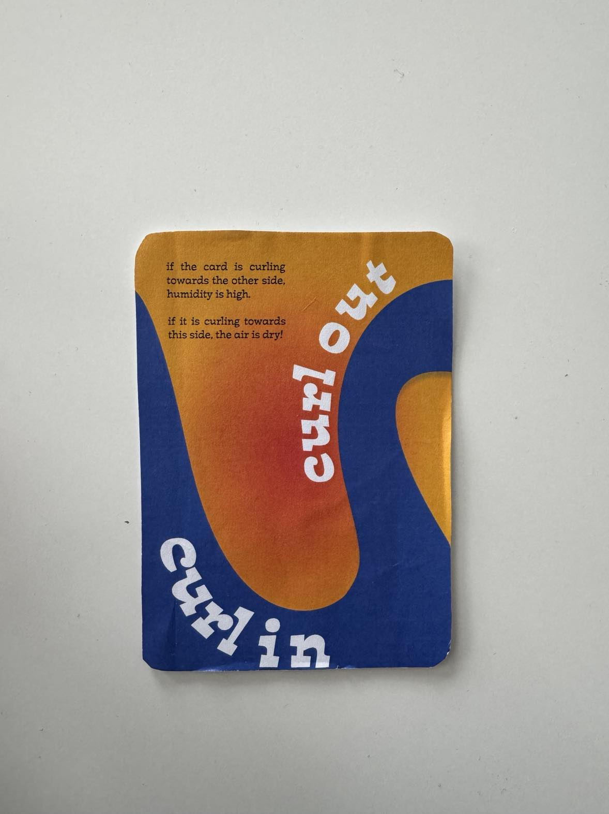
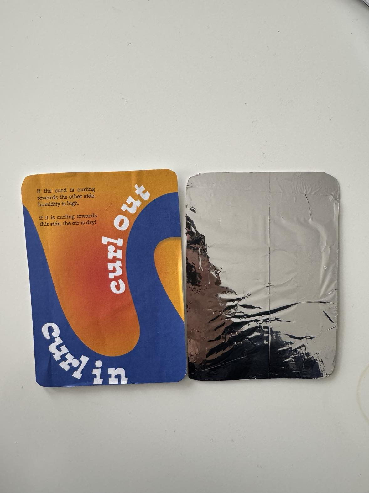
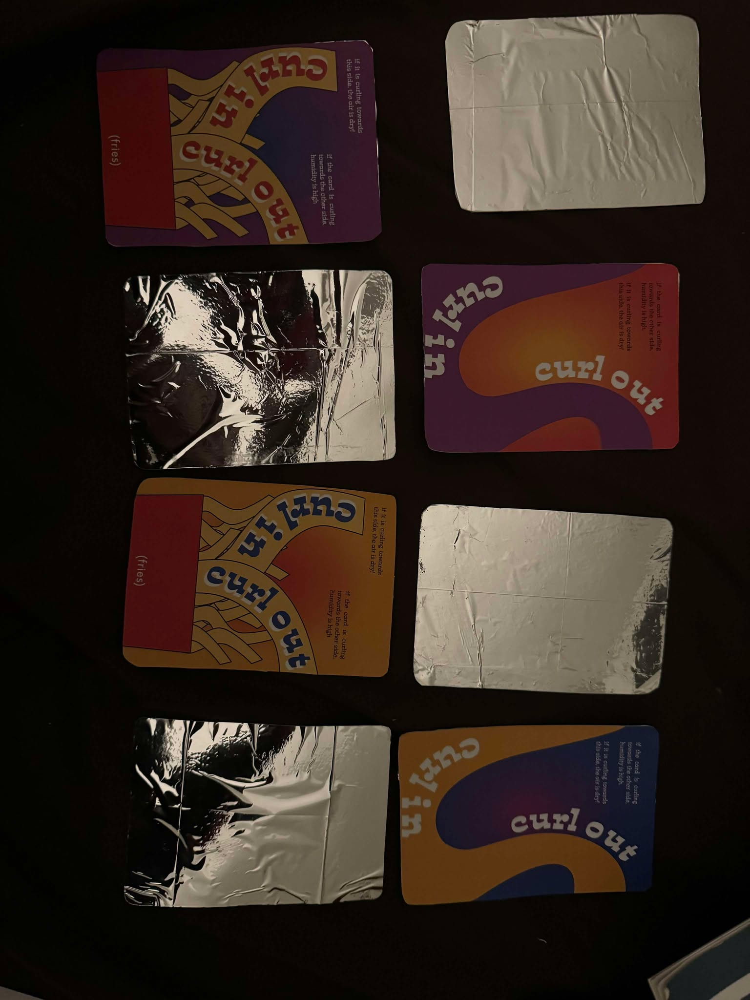
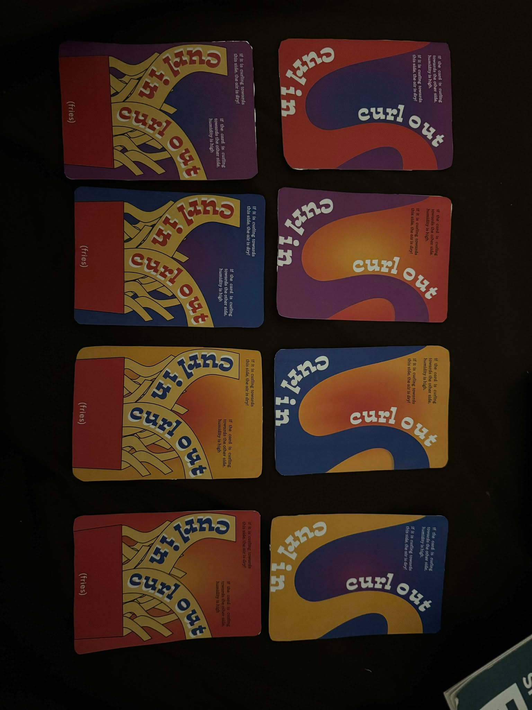
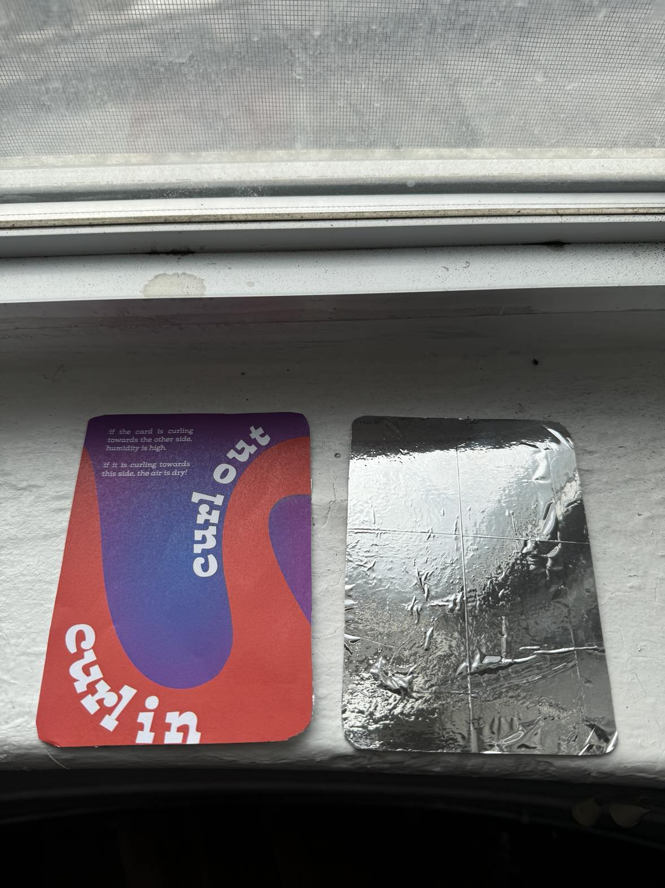
Card Colorways
The S-wave motif was designed in four colorways, each a different warm/cool pairing that maintains the bold, graphic quality of the card face.
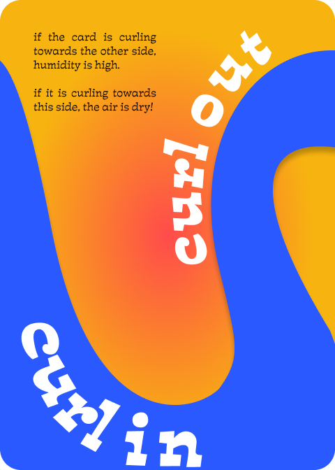
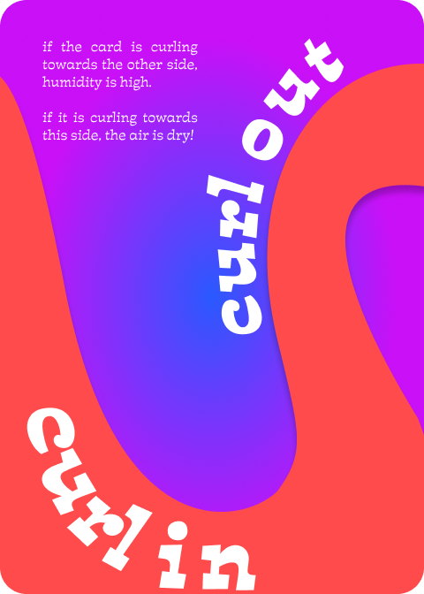
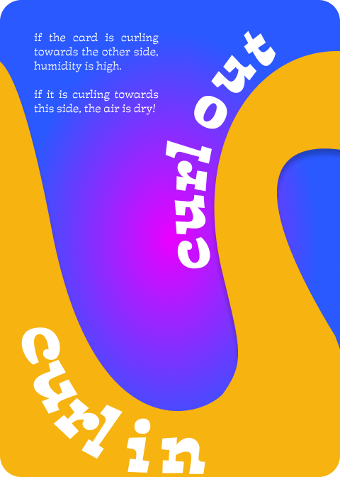
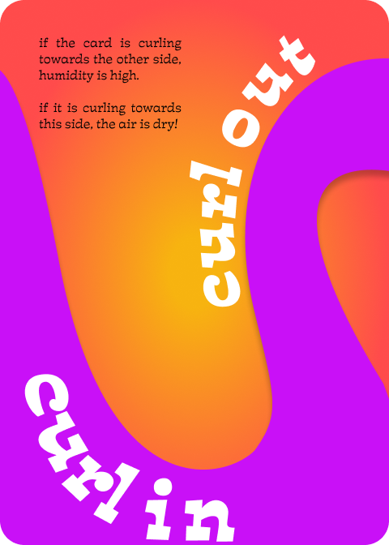
Packaging
The card box extends the brand system with the same S-curve and "curl in / curl out" wordmark on the front. The back panel serves as a built-in how-to guide, explaining the mylar science so anyone can use the cards immediately after opening.
The box itself is hand-constructed from bristol paper and glue, a nice echo of the card material.
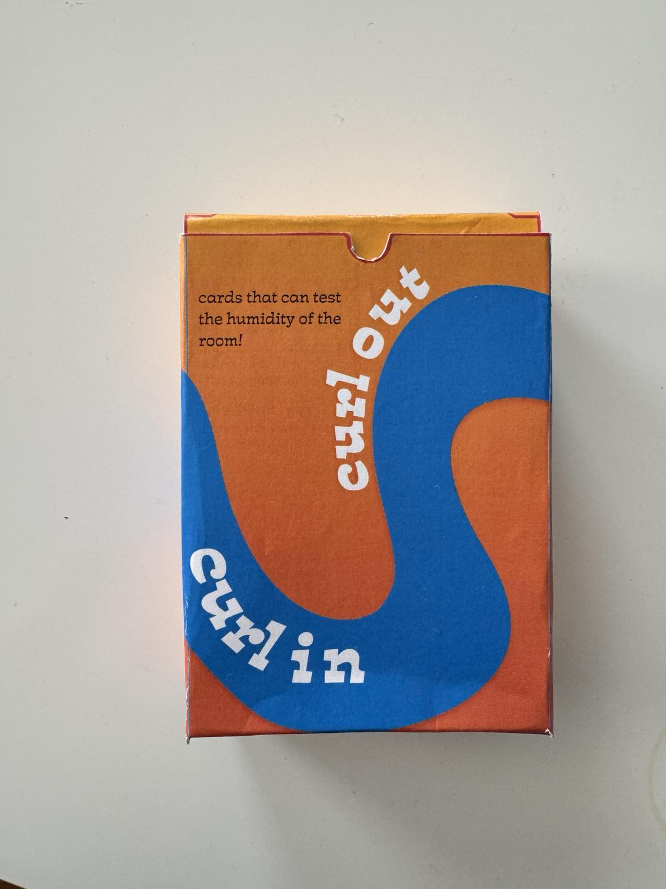
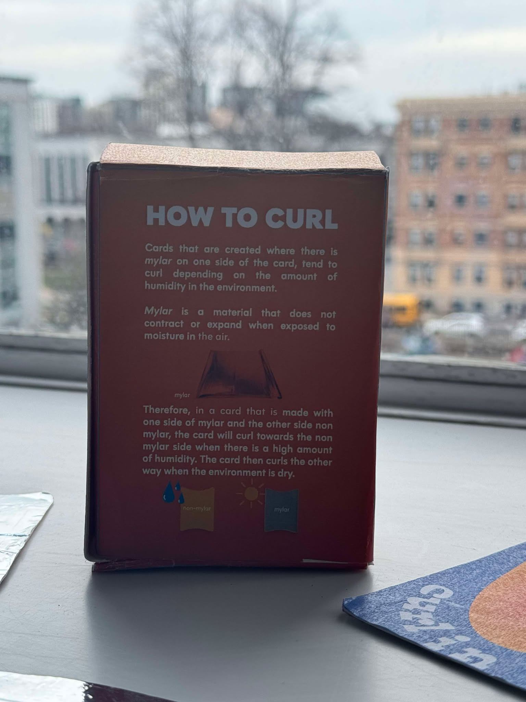
Front and back of the printed card box
Production
The packaging was designed as a flat dieline before being printed and assembled. The S-curve graphic wraps across panels, so the assembled box reads as one continuous design.
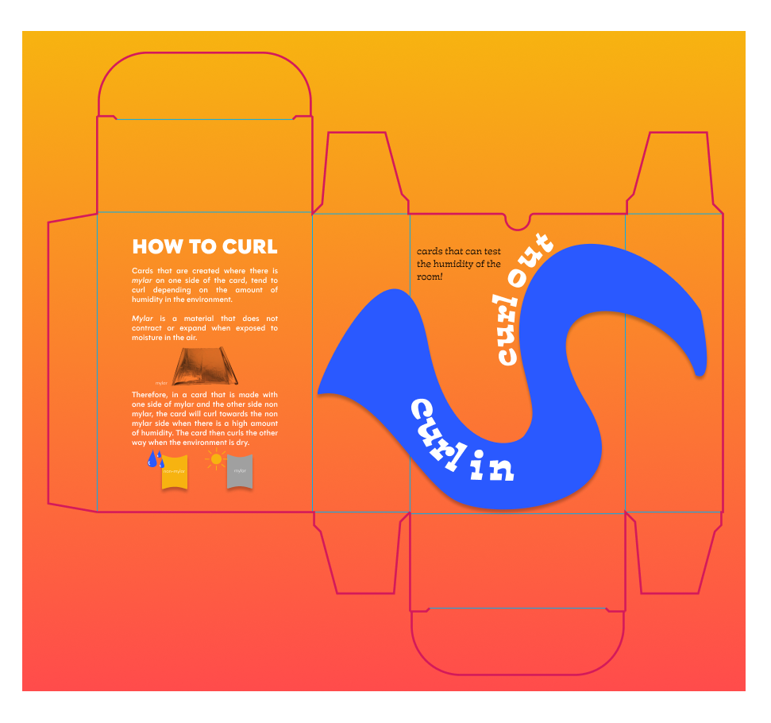
Reflection
Mylar is the same material used in emergency blankets and chip bags. Discovering that while researching made the project feel connected to a much larger material ecosystem. The "sensor" is really just material properties doing what they naturally do.
Magic: The Gathering uses a hot press to meld mylar onto cards while letting the design show through. I'd like to find a way to recreate that process. Having the print visible through the mylar side would make the cards feel even more intentional.